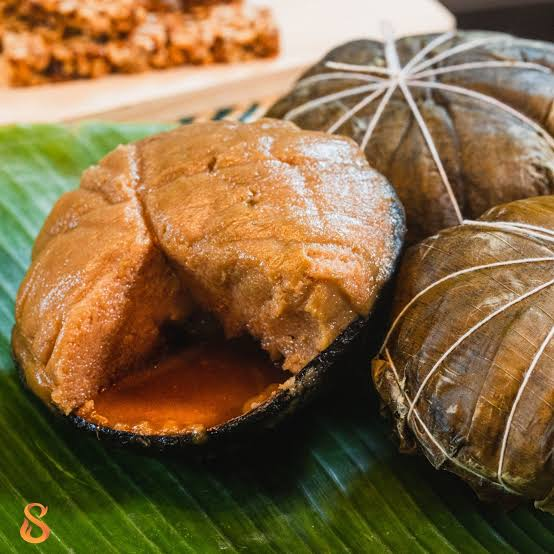

|
|
Binagol

A sweet delicacy from Leyte. Binagol is a Filipino sweet steamed delicacy of the Waray people made from mashed giant taro corms, condensed milk, sugar, coconut milk, and egg yolks. It is distinctively placed in half of a coconut shell and then wrapped in banana leaves and twine. The name means "placed in a coconut shell", from the Visayan bagol (coconut shell). Binagol traditionally uses the corms of the giant taro (locally known as talyan or talian)
INGRINDIENTS
1. ¾ cups shredded raw gabi (“TALYAN” or Giant Taro root)
2. 1 cup thick coconut milk (from 2 medium coconuts)
3. ¾ cup brown sugar
4. 4 clean medium coconut shells (4½ ″ diameter and 2″ high)
5. ½ can full cream condensed milk
6. 4 egg yolks
7. Wilted banana leaves
8. String for tying
INSTRUCTIONS
1. In a large pan, combine first three ingredients (gabi, coconut milk, brown sugar) and cook over medium heat for about 6 minutes with continuous stirring.
2. Adjust heat to low and continue to mix for 10 minutes. Pour in condensed milk, mix it well for about 20 minutes more. Constant stirring is required to prevent scorching at the bottom. Turn off heat and transfer into prepared coconut shells.
3. Fill each coconut shell with the mixture. Dig a small slope in center of the mixture and drop 1 raw egg yolk in each coconut shell.
4. Cover the egg yolk with another tuber mixture (i-saklob sa ibabaw). Spread it out evenly on top until smooth on top. (Make sure to cover up to the rim of each shell).
5. Place two layers banana leaves on top to cover the shell. Tie it securely with strings around the coconut shells. Then steam it for for 1 hour.
6. Serve and enjoy!
|